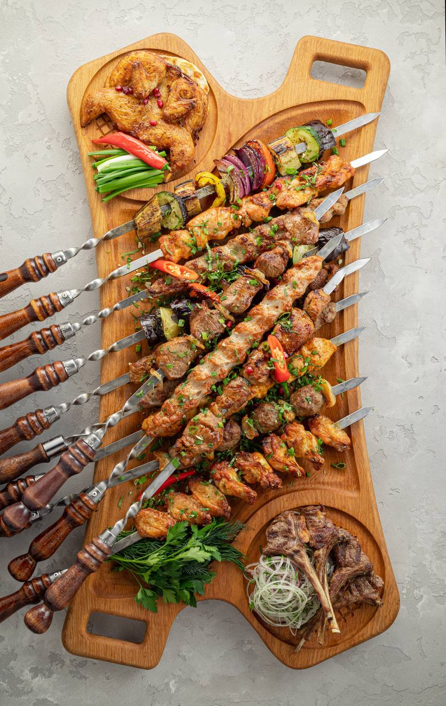

Форма «Шашлык»
от 4 200 ₽

Материал: натуральный дуб.
Размеры: 50 × 25 × 2 см.
Финиш: безопасное для пищевых продуктов масло.
Эта доска специально разработана для подачи ассорти шашлыков — в центральной нише удобно разместить кусочки мяса, а по бокам — овощи и соусы. Эргономичная ручка позволяет легко переносить и подавать блюдо.
| Параметр | Значение |
|---|---|
| Длина | 50 см |
| Ширина | 25 см |
| Толщина | 2 см |
| Вес | 1.2 кг |
| Материал | Дуб |